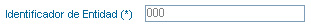
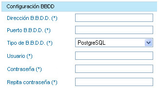

|
Pasos a seguir para realizar una exportación completa:
1)
 Para exportar una entidad pulse sobre el botón Exportar de la entidad correspondiente del listado de entidades. Para exportar una entidad pulse sobre el botón Exportar de la entidad correspondiente del listado de entidades.2) Introducir los datos ralativos a las bases de datos:
Datos generales de la exportación
3)  Datos de la base de datos de origen  En caso de seleccionar como tipo de base de datos "Oracle" o "Db2", se deberá especificar la instancia con la que trabajar y los diferentes esquemas de conexión para cada uno de los módulos. Una vez introducidor todos los datos, pulse sobre el botón Comprobar. Si todos los datos son correctos y se ha podido establecer la conexión correctamente con la base de datos de la entidad de origen, se habilitará el botón Aceptar. Si el usuario está de acuerdo con los datos introducidos pulse el botón Aceptar para iniciar el proceso de exportación. En caso de haber validado los datos y estos ser correctos, si se modifica alguno de los valores introducidos, el usuario deberá repetir el proceso de validación pulsando de nuevo el botón Comprobar. Tanto si el proceso ha sido correctamente iniciado como si no, el usuario será informado del estado actual.  Una vez iniciado correctamente la exportación, el usuario podrá seguir al detalle el proceso pulsando sobre el botón de Monitorización Una vez iniciado correctamente la exportación, el usuario podrá seguir al detalle el proceso pulsando sobre el botón de Monitorización
Seleccione del desplegable de exportaciones el proceso de exportación iniciado (identificación del proceso mediante la hora de inicio).
En la parte superior se mostrará un aviso indicando si el proceso se encuentra en estado de ejecución o si ya ha finalizado. En la parte central de la pantalla se visualizará el log asociado al proceso seleccionado  En la parte inferior, el usuario tiene la posibilidad de actualizar automáticante el log del proceso cada x segundos (introducir cada cuantos segundo se desea actualizar, con un valor mínimo de 10 segundos, y pulsar el botón Actualizar). Este proceso de actualización sólo se realizará si el proceso seleccionado no ha finalizado. En caso de querer detener el proceso de actualización automática, deje vacío el campo de tiempo y pulse sobre el botón Actualizar  |
||||